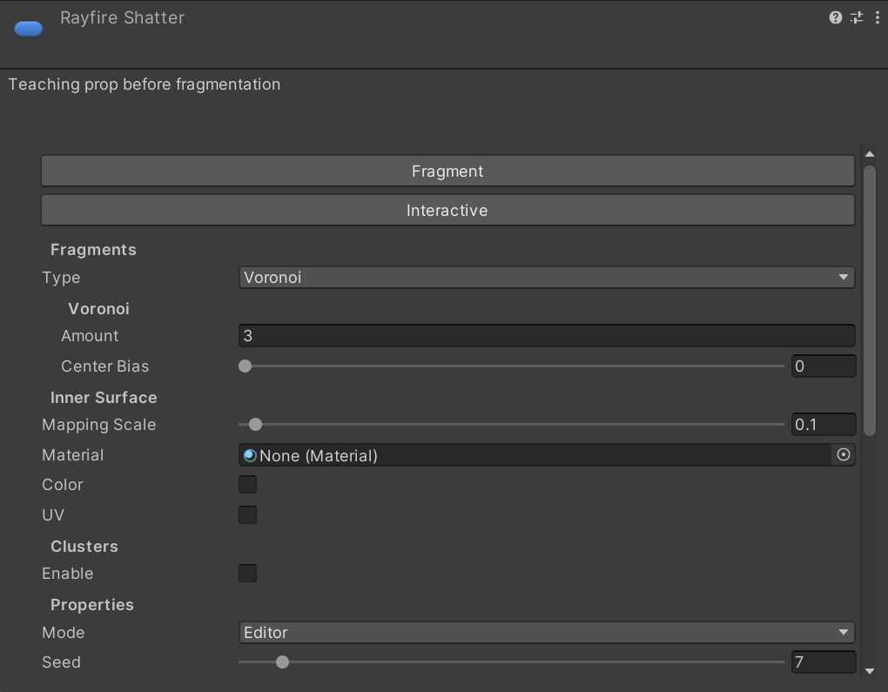
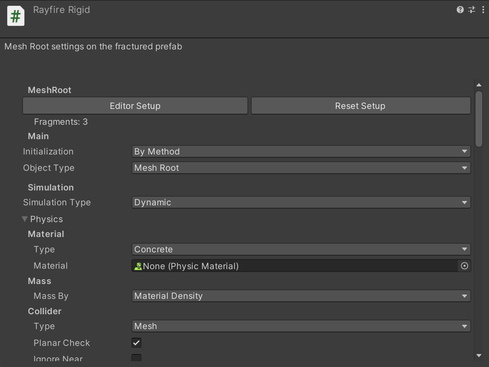

Create a destructible object with shattered prefabs
中文 | English
Run this command at the repository root to replay the examples through the local Unity MCP. The command also captures screenshots in both languages.
python Docs/Manual/manual/tools/tutorials.py run destructible-object-creation --capture
Click to expand MCP actionsClick to collapse MCP actions
Prepare the teaching sample. The recipe provides ${variables}.
{
"variables": {
"intact": "${fixture}/Tutorial_Fence_Intact.prefab",
"fractured": "${fixture}/Tutorial_Fence_Fractured.prefab"
},
"calls": [
{
"tool": "invoke",
"arguments": {
"path": "static:UnityEditor.AssetDatabase/CreateFolder",
"args": [
"${fixtureParent}",
"${folder}"
]
},
"expect": {
"contains": "(String)"
}
}
]
}
This workflow uses RayFire Shatter to cut an intact model into fragments, then turns those fragments into a prefab driven by RayFire Rigid. It suits props such as fences and walls that should break apart as a whole. If you only need to swap between an intact and a damaged model, see destructible objects: model replacement.
Prepare the model and the Shatter component
Place the intact model in the scene and select the object that has the mesh. Search Add Component for Rayfire Shatter. If you started with a prefab, fragment its scene instance and save the resulting fragments to a new prefab.
Set fragment parameters and split
In the component's Fragments section, choose the fragment type; the sample uses Type=Voronoi and Amount=3. Inner Surface Material is configurable and controls how the broken faces look; the sample value is only a reference.
Once the parameters look right, click the Fragment button to split the object.

Export the fragment mesh
In the Export section, set Source to Last Fragments, set Suffix to _frags, then click Export Last Fragments to save the cut mesh.
Organize the hierarchy and save a prefab
Select the new *_root object after splitting. The original fence example used Prop_Fence_01B_root, with children named like *_sh_#. Expand the root to check its fragments and mesh references, then drag it into Project as a prefab. Keep the exported mesh asset because the prefab references its fragment meshes.
Attach Rayfire Rigid to the root of the saved prefab.
Configure RayFire Rigid
On RayFire Rigid, set Object Type to Mesh Root, then click Editor Setup so the component registers the fragments from the current hierarchy.
The sample also uses Initialization=By Method, Simulation Type=Dynamic, material Concrete, and a Mesh collider. Adjust these to the prop's actual material and how it should react.

Assign the Fracture Layer
Select the fragment children under the generated root in Hierarchy and set their Layer to Fracture. Save and reopen the prefab to check the layer and exported mesh references.
Click to expand MCP actionsClick to collapse MCP actions
Fragment a teaching prop in an isolated scene with RayFire, export the mesh, and save a Mesh Root prefab with Fracture children.
[
{
"tool": "invoke",
"arguments": {
"path": "static:ShanghaiWindy.Core.AssetBundleManager/LuaEnv/DoString",
"args": [
"local run = assert(loadfile(\"../../Docs/Manual/tutorials/destructible-object-creation/example.lua\"))()\nreturn run(\"${fixture}\")",
"docs-rayfire",
"null"
]
},
"expect": {
"contains": "RayFire saved 3 mesh fragments with Mesh Root and Fracture layer"
}
}
]
Test
Place the prefab in an isolated test scene and trigger the destruction. Check that the fragments separate as expected, the inner surface material is correct, and the fragment layer applies. An isolated scene keeps other map objects from confusing the result. The saved mesh and prefab should match the description above; if the fragment count or names differ, regenerate them from the export step.
For the model replacement route, see destructible objects.